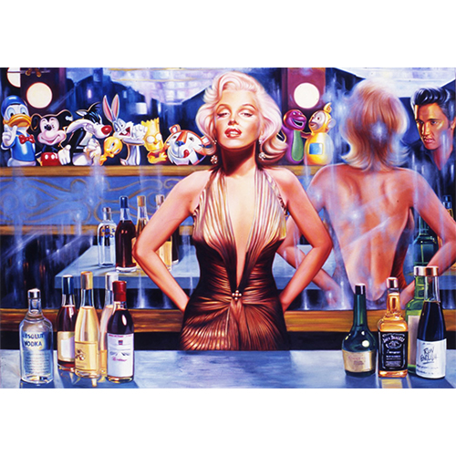

Exhibitions
Ron English Exhibition, Arte Vista The Pop-Art Gallery, Badhoevedorp, Netherlands, March 27–28, 2005.
Literature
Ron English, Original Grin: The Art of Ron English (Paris: Cernunnos, 2019), p. 304. ISBN 978-2374950938.
Marilyn in Art (London: Pop Art Books, 2006), pp. 68–69, 123. ISBN 1-904957-02-1.
Notes
This work appears in a promotional invitation / advertisement for Ron English Exhibition, Arte Vista The Pop-Art Gallery, indicating likely inclusion in the exhibition. Source unidentified; preserved in archive.
This work draws directly from Édouard Manet’s A Bar at the Folies-Bergère.

This work also references Marilyn Monroe.